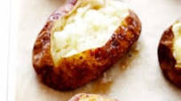

Baked Potato Recipe

What is a baked potato?
A baked potato, known in some parts of the United Kingdom (though not generally Scotland) as a jacket potato, is a preparation of potato.
Ingredients:
- 1 russet potato
- 2 tsp olive oil
- Pinch of kosher salt
- Pinch of fresh cracked black pepper
Steps:
- Heat oven to 450
- Line baking sheet with foil
- Prep potato by poking holes in it with fork
- Bake for 25 minutes
- Brush outside of potato with olive oil
- Sprinkle with salt and pepper
- Bake for 20 minutes
- Cut potato and serve